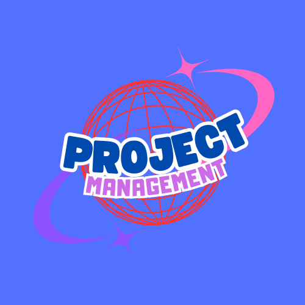

Manajemen proyek adalah suatu disiplin yang terorganisir yang bertujuan untuk merencanakan, melaksanakan, dan mengendalikan suatu proyek agar tujuan yang telah ditentukan dapat tercapai dengan sukses. Proyek sendiri
dapat didefinisikan sebagai serangkaian aktivitas yang memiliki tujuan khusus, dimulai dengan perencanaan dan berakhir dengan pencapaian hasil. Manajemen proyek mencakup serangkaian kegiatan yang terkoordinasi dan
terkendali untuk memastikan proyek berjalan sesuai dengan jadwal, anggaran, dan kualitas yang diinginkan.
Setiap proyek memiliki siklus hidup yang terdiri dari beberapa fase, yang umumnya meliputi inisiasi, perencanaan, pelaksanaan, pengendalian, dan penutupan. Di fase inisiasi, proyek mendapatkan persetujuan dan disetujui
untuk dimulai. Pada fase perencanaan, tujuan, anggaran, dan sumber daya yang diperlukan diidentifikasi, serta jadwal disusun. Pelaksanaan adalah fase di mana aktivitas utama proyek dilakukan, dan hasil mulai terlihat.
Fase pengendalian melibatkan pemantauan progres proyek untuk memastikan bahwa semuanya berjalan sesuai rencana. Terakhir, fase penutupan menandai selesainya proyek, di mana hasilnya dievaluasi dan dokumen proyek
diselesaikan.
Salah satu peran utama seorang manajer proyek adalah memastikan bahwa proyek dilaksanakan sesuai dengan tujuan yang telah ditetapkan, dengan memanfaatkan sumber daya yang ada secara efisien. Manajer proyek bertanggung
jawab untuk memimpin tim, mengelola komunikasi, serta mengambil keputusan strategis untuk mengatasi masalah atau hambatan yang muncul selama proses proyek. Dengan demikian, kemampuan dalam komunikasi, perencanaan, dan
pengambilan keputusan yang tepat sangat diperlukan dalam peran ini.
Untuk mencapai kesuksesan dalam manajemen proyek, penting bagi manajer proyek untuk mengelola risiko dengan baik. Risiko dalam proyek bisa muncul dari berbagai aspek, seperti keterlambatan jadwal, masalah teknis,
atau perubahan yang tidak terduga dari klien atau stakeholder. Oleh karena itu, manajer proyek harus mampu membuat rencana mitigasi risiko untuk mengurangi dampak negatif yang mungkin terjadi. Proses ini termasuk
mengidentifikasi risiko sejak dini dan merencanakan solusi untuk menghadapinya.
Manajemen proyek juga tidak hanya berlaku di sektor bisnis atau industri besar. Banyak proyek kecil, seperti pembangunan website, pengorganisasian acara, atau peluncuran produk, juga memerlukan pendekatan
manajerial yang sama. Dengan menggunakan alat bantu seperti Gantt Chart, Work Breakdown Structure (WBS), dan perangkat manajemen proyek lainnya, manajer proyek dapat lebih mudah merencanakan, memantau, dan
mengendalikan jalannya proyek. Kemampuan untuk mengelola proyek dengan baik akan membantu individu atau organisasi untuk mencapai hasil yang optimal dengan sumber daya yang terbatas.
Pengenalan Manajemen Proyek
Apa yang dimaksud dengan fase pertama dalam siklus hidup proyek?
Apa yang perlu dikelola dengan baik dalam manajemen proyek untuk menghindari masalah?
Apa alat yang digunakan untuk merencanakan jadwal proyek?